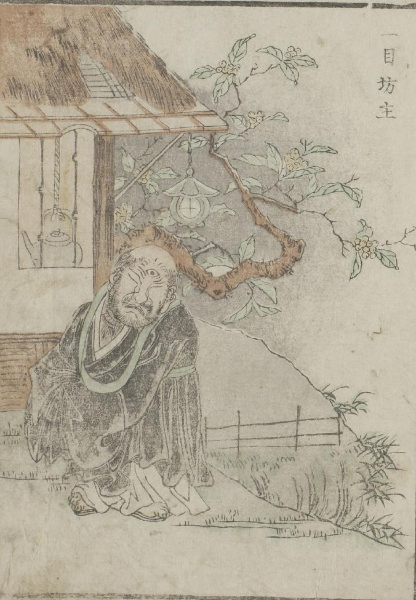

一つ目；ヒトツメ，僧；ソウ

古い庵の前に、僧形の男が立っている。両の目を閉じ、額の一つ目を開いている。
出典：親書誌：U426_nichibunken_0051：怪物画本；カイブツエホン／日付：2006／資源識別子：U426_nichibunken_0051_0019_0000
Copyright (c)2010- International Research Center for Japanese Studies, Kyoto, Japan. All rights reserved.